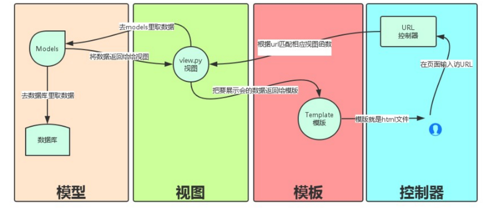
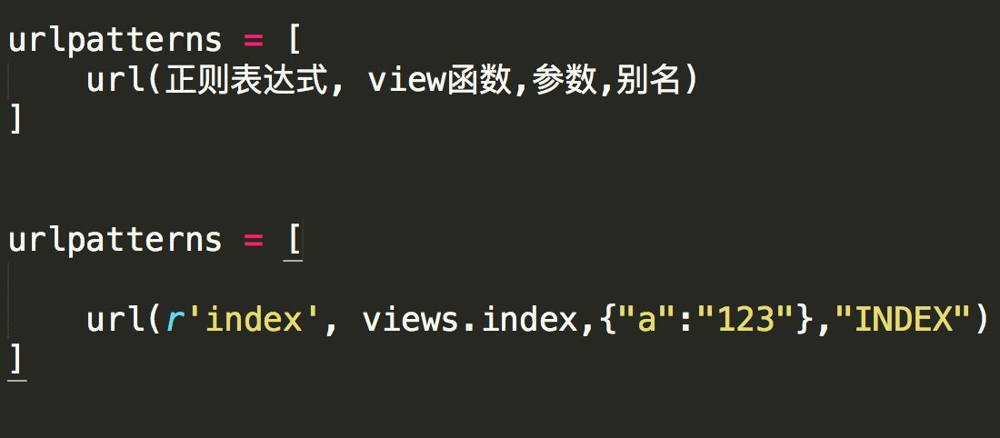
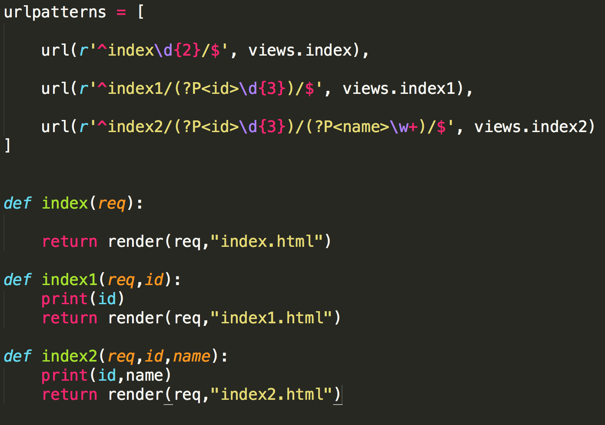
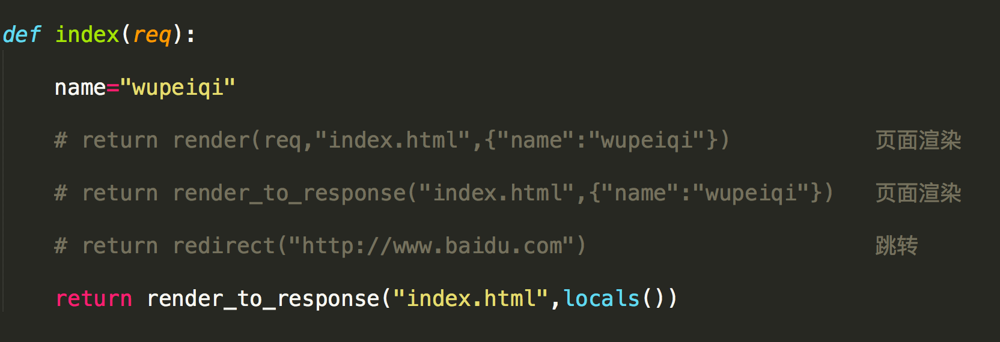
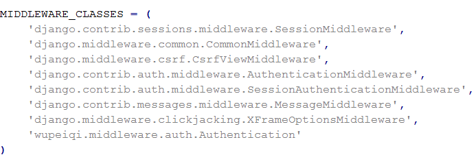
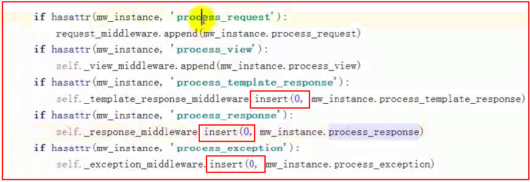
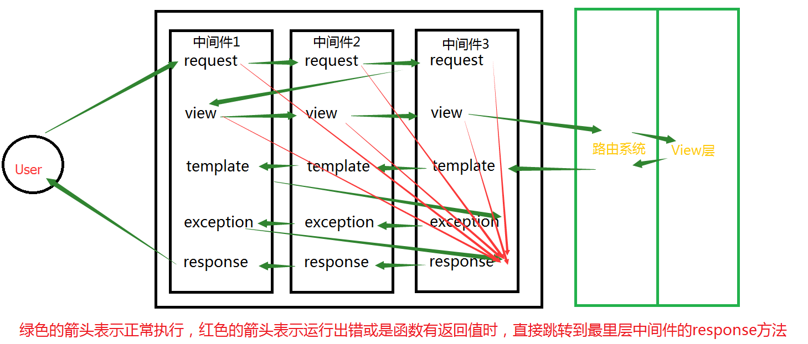

Python的WEB框架有Django、Tornado、Flask 等多种，Django相较与其他WEB框架其优势为：大而全，框架本身集成了ORM、模型绑定、模板引擎、缓存、Session等诸多功能。
本文将以下方面带大家全面了解Django框架，笔者使用的版本为1.10.
-
django流程介绍
- 基本配置
- 路由系统
- 视图view
- 模板
- Model
- 中间件
- Form
- 认证系统
- CSRF
- 分页
- Cookie
- Seesion
- 缓存
- 序列化
- 信号
- admin
一、 Django流程介绍

MVC是众所周知的模式，即：将应用程序分解成三个组成部分:model(模型),view(视图),和 controller(控制 器)。其中：
M——管理应用程序的状态（通常存储到数据库中），并约束改变状态的行为（或者叫做“业务规则”）。
C——接受外部用户的操作，根据操作访问模型获取数据，并调用“视图”显示这些数据。控制器是将“模型”和“视图”隔离，并成为二者之间的联系纽带。
V——负责把数据格式化后呈现给用户。
Django也是一个MVC框架。但是在Django中，控制器接受用户输入的部分由框架自行处理，所以 Django 里更关注的是模型（Model）、模板(Template)和视图（Views），称为 MTV模式：
M 代表模型（Model），即数据存取层。 该层处理与数据相关的所有事务： 如何存取、如何验证有效性、包含哪些行为以及数据之间的关系等。
T 代表模板(Template)，即表现层。 该层处理与表现相关的决定： 如何在页面或其他类型文档中进行显示。
V 代表视图（View），即业务逻辑层。 该层包含存取模型及调取恰当模板的相关逻辑。 你可以把它看作模型与模板之间的桥梁。
二、 Django 基本配置
1. 创建django程序
- 终端命令：django-admin startproject sitename (在当前目录下创建一个Django程序)
- IDE创建Django程序时，本质上都是自动执行上述命令
其他常用命令：
python manage.py runserver ip:port (启动服务器，默认ip和端口为http://127.0.0.1:8000/)
python manage.py startapp appname (新建 app)
python manage.py syncdb (同步数据库命令，Django 1.7及以上版本需要用以下的命令）
python manage.py makemigrations (显示并记录所有数据的改动)
python manage.py migrate (将改动更新到数据库)
python manage.py createsuperuser (创建超级管理员)
python manage.py dbshell (数据库命令行)
python manage.py (查看命令列表)
2. 程序目录

3. 配置文件
a、数据库
支持SQLite 3（默认）、PostgreSQL 、MySQL、Oracle数据库的操作


# 默认是SQLit 3 的配置 DATABASES = { 'default': { 'ENGINE': 'django.db.backends.sqlite3', 'NAME': os.path.join(BASE_DIR, 'db.sqlite3'), } } # MySQL的配置 DATABASES = { 'default': { 'ENGINE': 'django.db.backends.mysql', 'NAME':'dbname', #注意这里的数据库应该以utf-8编码 'USER': 'xxx', 'PASSWORD': 'xxx', 'HOST': '', 'PORT': '', } } # 对于python3的使用者们还需要再加一步操作 # 由于Django内部连接MySQL时使用的是MySQLdb模块，而python3中还无此模块，所以需要使用pymysql来代替 # 如下设置放置的与project同名的配置的 __init__.py文件中 import pymysql pymysql.install_as_MySQLdb() # PostgreSQL配置 DATABASES = { 'default': { 'NAME': 'app_data', 'ENGINE': 'django.db.backends.postgresql_psycopg2', 'USER': 'XXX', 'PASSWORD': 'XXX' } # Oracle配置 DATABASES = { 'default': { 'ENGINE': 'django.db.backends.oracle', 'NAME': 'xe', 'USER': 'a_user', 'PASSWORD': 'a_password', 'HOST': '', 'PORT': '', } }
Django框架对于开发者而言高度透明化，对于不同数据库的具体使用方法是一致的，改变数据库类型只需要变动上述配置即可。
想要了解更多请戳这里
b、静态文件添加
# 首先在项目根目录下创建static目录 # 接着在settings.py 文件下添加 STATIC_URL = '/static/' # 默认已添加，使用静态文件时的前缀 STATICFILES_DIRS = ( os.path.join(BASE_DIR,'static'), #行末的逗号不能漏 ) # 这样在template中就可以导入static目录下的静态文件啦 # 例： <script src="/static/jquery-1.12.4.js"></script>
三、 Django 路由系统
URL配置(URLconf)就像Django 所支撑网站的目录。它的本质是URL模式以及要为该URL模式调用的视图函数之间的映射表；你就是以这种方式告诉Django，对于这个URL调用这段代码，对于那个URL调用那段代码。URL的加载是从配置文件中开始。

参数说明：
- 一个正则表达式字符串
- 一个可调用对象，通常为一个视图函数或一个指定视图函数路径的字符串
- 可选的要传递给视图函数的默认参数（字典形式）
- 一个可选的name参数
1. 示例
|
1
2
3
4
5
6
7
8
9
10
|
from django.conf.urls import url from . import views urlpatterns = [ url(r'^articles/2003/$', views.special_case_2003), url(r'^articles/([0-9]{4})/$', views.year_archive), url(r'^articles/([0-9]{4})/([0-9]{2})/$', views.month_archive), url(r'^articles/([0-9]{4})/([0-9]{2})/([0-9]+)/$', views.article_detail),] |
说明:
- 要捕获从URL中的值，用括号括起来，会当参数传入 views 视图。
- 没有必要添加一个斜线，因为每个URL都有。例如，它
^articles不是^/articles。 - 在
'r'前面的每个正则表达式字符串中是可选的，但建议。它告诉Python字符串是“原始” -没有什么字符串中应该进行转义。
请求示例:
- 一个请求
/articles/2005/03/会匹配上面列表中的第三条. Django 会调用函数views.month_archive(request, '2005', '03'). /articles/2005/3/不会匹配上面列表中的任何条目, 因为第三条的月份需要二位数字./articles/2003/会匹配上第一条而不是第二条，因为匹配是按照从上到下顺序而进行的， Django 会调用函数views.special_case_2003(request)/articles/2003不会匹配上面列表中的任何条目, 因为每个URL应该以 / 结尾./articles/2003/03/03/会匹配上最后一条. Django 会调用函数views.article_detail(request, '2003', '03', '03').
2. 命名组（Named groups）
在上面的简单例子中，并没有使用正则表达式分组，在更高级的用法中，很有可能使用正则分组来匹配URL并且将分组值通过参数传递给view函数。
在Python的正则表达式中，分组的语法是 (?P<name>pattern), name表示分组名，pattern表示一些匹配正则.
这里是一个简单的小例子：
|
1
2
3
4
5
6
7
8
9
10
11
12
|
# 正则知识import reret=re.search('(?P<id>\d{3})/(?P<name>\w{3})','weeew34ttt123/ooo')print(ret.group())print(ret.group('id'))print(ret.group('name'))-------------------------------------123/ooo123ooo |
|
1
2
3
4
5
6
7
8
9
10
|
from django.conf.urls import url from . import views urlpatterns = [ url(r'^articles/2003/$', views.special_case_2003), url(r'^articles/(?P<year>[0-9]{4})/$', views.year_archive), url(r'^articles/(?P<year>[0-9]{4})/(?P<month>[0-9]{2})/$', views.month_archive), url(r'^articles/(?P<year>[0-9]{4})/(?P<month>[0-9]{2})/(?P<day>[0-9]{2})/$', views.article_detail),] |
For example:
- A request to
/articles/2005/03/会调用函数views.month_archive(request, year='2005',month='03'), 而不是views.month_archive(request, '2005', '03'). - A request to
/articles/2003/03/03/会调用函数views.article_detail(request, year='2003',month='03', day='03').
常见写法实例：

3. 二级路由（Including）
那如果映射 url 太多怎么办，全写一个在 urlpatterns 显得繁琐，so 二级路由应用而生
|
1
2
3
4
5
6
7
8
9
10
11
12
13
14
15
16
|
from django.conf.urls import include, urlfrom apps.main import views as main_viewsfrom credit import views as credit_viewsextra_patterns = [ url(r'^reports/$', credit_views.report), url(r'^reports/(?P<id>[0-9]+)/$', credit_views.report), url(r'^charge/$', credit_views.charge),]urlpatterns = [ url(r'^$', main_views.homepage), url(r'^help/', include('apps.help.urls')), url(r'^credit/', include(extra_patterns)),] |
在上面这个例子中，如果请求url为 /credit/reports/ 则会调用函数 credit_views.report().
使用二级路由也可以减少代码冗余，使代码更加简洁易懂
|
1
2
3
4
5
6
7
8
9
10
11
12
13
14
15
16
17
18
19
20
21
22
23
24
|
# 原始版本from django.conf.urls import urlfrom . import viewsurlpatterns = [ url(r'^(?P<page_slug>[\w-]+)-(?P<page_id>\w+)/history/$', views.history), url(r'^(?P<page_slug>[\w-]+)-(?P<page_id>\w+)/edit/$', views.edit), url(r'^(?P<page_slug>[\w-]+)-(?P<page_id>\w+)/discuss/$', views.discuss), url(r'^(?P<page_slug>[\w-]+)-(?P<page_id>\w+)/permissions/$', views.permissions),]# 改进版本from django.conf.urls import include, urlfrom . import viewsurlpatterns = [ url(r'^(?P<page_slug>[\w-]+)-(?P<page_id>\w+)/', include([ url(r'^history/$', views.history), url(r'^edit/$', views.edit), url(r'^discuss/$', views.discuss), url(r'^permissions/$', views.permissions), ])),] |
4. 添加额外的参数
URLconfs 有一个钩子可以让你加入一些额外的参数到view函数中.
|
1
2
3
4
5
6
|
from django.conf.urls import urlfrom . import views urlpatterns = [ url(r'^blog/(?P<year>[0-9]{4})/$', views.year_archive, {'foo': 'bar'}),] |
在上面的例子中，如果一个请求为 /blog/2005/, Django 将会调用函数l views.year_archive(request, year='2005',foo='bar').
需要注意的是，当你加上参数时，对应函数views.year_archive必须加上一个参数，参数名也必须命名为 foo，如下：
|
1
2
3
|
def year_archive(request, foo): print(foo) return render(request, 'index.html') |
5. 别名的使用
|
1
|
url(r'^index',views.index,name='bieming') |
url中还支持name参数的配置，如果配置了name属性，在模板的文件中就可以使用name值来代替相应的url值.
我们来看一个例子：
urlpatterns = [ url(r'^index',views.index,name='bieming'), url(r'^admin/', admin.site.urls), # url(r'^articles/2003/$', views.special_case_2003), url(r'^articles/([0-9]{4})/$', views.year_archive), # url(r'^articles/([0-9]{4})/([0-9]{2})/$', views.month_archive), # url(r'^articles/([0-9]{4})/([0-9]{2})/([0-9]+)/$', views.article_detail), ] ################### def index(req): if req.method=='POST': username=req.POST.get('username') password=req.POST.get('password') if username=='alex' and password=='123': return HttpResponse("登陆成功") return render(req,'index.html') ##################### <!DOCTYPE html> <html lang="en"> <head> <meta charset="UTF-8"> <title>Title</title> </head> <body> {# <form action="/index/" method="post">#} {# 这里只要使用bieming即可代替/index #} <form action="{% url 'bieming' %}" method="post"> 用户名:<input type="text" name="username"> 密码:<input type="password" name="password"> <input type="submit" value="submit"> </form> </body> </html>
6. 指定view的默认配置
|
1
2
3
4
5
6
7
8
9
10
11
12
13
14
|
# URLconffrom django.conf.urls import urlfrom . import viewsurlpatterns = [ url(r'^blog/$', views.page), url(r'^blog/page(?P<num>[0-9]+)/$', views.page),]# View (in blog/views.py)def page(request, num="1"): # Output the appropriate page of blog entries, according to num. ... |
在上述的例子中，两个 URL 模式指向同一个视图 views.page 但第一图案不捕获从 URL 任何东西。如果第一个模式匹配，该 page() 函数将使用它的默认参数 num，"1"。如果第二图案相匹配时， page()将使用任何 num 值由正则表达式捕获。
四、 Django Views（视图函数）
http请求中产生两个核心对象：
http请求：HttpRequest对象
http响应：HttpResponse对象
1. HttpRequest对象
当请求一个页面时，Django 创建一个 HttpRequest对象包含原数据的请求。然后 Django 加载适当的视图，通过 HttpRequest作为视图函数的第一个参数。每个视图负责返回一个HttpResponse目标。
HttpRequest对象属性2. HttpResponse对象
对于HttpRequest对象来说，是由django自动创建的，但是，HttpResponse对象就必须我们自己创建。每个view请求处理方法必须返回一个HttpResponse对象。
在HttpResponse对象上扩展的常用方法：
- 页面渲染：render（推荐），render_to_response,
- 页面跳转：redirect
- locals： 可以直接将对应视图函数中所有的变量传给模板

值得注意的是对于页面渲染的方法中，render和render_to_response使用方法和功能类似，但是render功能更为强大，推荐使用
3. render()
- render(request, template_name, context=None, content_type=None, status=None, using=None)[source]
- 结合给定的模板与一个给定的上下文，返回一个字典HttpResponse在渲染文本对象
所需的参数
template_name 一个模板的使用或模板序列名称全称。如果序列是给定的，存在于第一个模板将被使用。
可选参数
context 一组字典的值添加到模板中。默认情况下，这是一个空的字典。
content_type MIME类型用于生成文档。
status 为响应状态代码。默认值为200
using 这个名字一个模板引擎的使用将模板。
from django.shortcuts import render def my_view(request): # View code here... return render(request, 'myapp/index.html', { 'foo': 'bar', }, content_type='application/xhtml+xml')
五、 模板
1. 模板的执行
模版的创建过程，对于模版，其实就是读取模版（其中嵌套着模版标签），然后将 Model 中获取的数据插入到模版中，最后将信息返回给用户。
# view.py def index(request): return render(request, 'index.html', {'title':'welcome'}) # index.html <!DOCTYPE html> <html lang="en"> <head> <meta charset="UTF-8"> <title>Title</title> </head> <body> <div> <h1>{{ title }}</h1> </div> </body> </html>
2. 模板语言
模板中也有自己的语言，该语言可以实现数据展示
- {{ item }}
- {% for item in item_list %} <a>{{ item }}</a> {% endfor %}
forloop.counter
forloop.first
forloop.last - {% if ordered_warranty %} {% else %} {% endif %}
- 母板：{% block title %}{% endblock %}
子板：{% extends "base.html" %}
{% block title %}{% endblock %} - 帮助方法：
{{ item.event_start|date:"Y-m-d H:i:s"}}
{{ bio|truncatewords:"30" }}
{{ my_list|first|upper }}
{{ name|lower }}
小知识点：在模板语言中字典数据类型的取值是通过dict.xxx而不是dict[xxx]
3. 自定义标签
因为在模板语言中不能够做运算等一些稍显复杂的操作，所以在Django中提供了两种自定制标签，一种是simple_tag，一种是filter。
simple_tag: 任意传递参数，但是不能用作布尔判断
filter: 最多只能传递二个参数，可以用作布尔判断
在这里着重介绍simple_tag类型，filter的实现类似
a、在app中创建templatetags模块
b、创建任意 .py 文件，如：xx.py
#!/usr/bin/env python #coding:utf-8 from django import template from django.utils.safestring import mark_safe from django.template.base import resolve_variable, Node, TemplateSyntaxError register = template.Library() @register.simple_tag def my_simple_time(v1,v2,v3): return v1 + v2 + v3 @register.simple_tag def my_input(id,arg): result = "<input type='text' id='%s' class='%s' />" %(id,arg,) return mark_safe(result)
c、在使用自定义simple_tag的html文件中导入之前创建的 xx.py 文件名
{% load xx %}
d、使用simple_tag
{% my_simple_time 1 2 3%}
{% my_input 'id_username' 'hide'%}
e、在settings中配置当前app，不然django无法找到自定义的simple_tag
INSTALLED_APPS = ( 'django.contrib.admin', 'django.contrib.auth', 'django.contrib.contenttypes', 'django.contrib.sessions', 'django.contrib.messages', 'django.contrib.staticfiles', 'app01', )
更多见文档：https://docs.djangoproject.com/en/1.10/ref/templates/language/
六、 Model
Django提供了一个抽象层（“Model”）来构建和管理Web应用程序的数据。
django中遵循 Code Frist 的原则，即：根据代码中定义的类来自动生成数据库表。
关系对象映射（Object Relational Mapping，简称ORM）。
1. 创建表
a、基本结构
from django.db import models
class userinfo(models.Model): name = models.CharField(max_length=30) email = models.EmailField() memo = models.TextField()
1、null=True 数据库中字段是否可以为空 2、blank=True django的 Admin 中添加数据时是否可允许空值 3、primary_key = False 主键，对AutoField设置主键后，就会代替原来的自增 id 列 4、auto_now 和 auto_now_add auto_now 自动创建---无论添加或修改，都是当前操作的时间 auto_now_add 自动创建---永远是创建时的时间 5、choices GENDER_CHOICE = ( (u'M', u'Male'), (u'F', u'Female'), ) gender = models.CharField(max_length=2,choices = GENDER_CHOICE) 6、max_length 7、default 默认值 8、verbose_name Admin中字段的显示名称 9、name|db_column 数据库中的字段名称 10、unique=True 不允许重复 11、db_index = True 数据库索引 12、editable=True 在Admin里是否可编辑 13、error_messages=None 错误提示 14、auto_created=False 自动创建 15、help_text 在Admin中提示帮助信息 16、validators=[] 17、upload-to
1、models.AutoField 自增列 = int(11) 如果没有的话，默认会生成一个名称为 id 的列，如果要显示的自定义一个自增列，必须将给列设置为主键 primary_key=True。 2、models.CharField 字符串字段 必须 max_length 参数 3、models.BooleanField 布尔类型=tinyint(1) 不能为空，Blank=True 4、models.ComaSeparatedIntegerField 用逗号分割的数字=varchar 继承CharField，所以必须 max_lenght 参数 5、models.DateField 日期类型 date 对于参数，auto_now = True 则每次更新都会更新这个时间；auto_now_add 则只是第一次创建添加，之后的更新不再改变。 6、models.DateTimeField 日期类型 datetime 同DateField的参数 7、models.Decimal 十进制小数类型 = decimal 必须指定整数位max_digits和小数位decimal_places 8、models.EmailField 字符串类型（正则表达式邮箱） =varchar 对字符串进行正则表达式 9、models.FloatField 浮点类型 = double 10、models.IntegerField 整形 11、models.BigIntegerField 长整形 integer_field_ranges = { 'SmallIntegerField': (-32768, 32767), 'IntegerField': (-2147483648, 2147483647), 'BigIntegerField': (-9223372036854775808, 9223372036854775807), 'PositiveSmallIntegerField': (0, 32767), 'PositiveIntegerField': (0, 2147483647), } 12、models.IPAddressField 字符串类型（ip4正则表达式） 13、models.GenericIPAddressField 字符串类型（ip4和ip6是可选的） 参数protocol可以是：both、ipv4、ipv6 验证时，会根据设置报错 14、models.NullBooleanField 允许为空的布尔类型 15、models.PositiveIntegerFiel 正Integer 16、models.PositiveSmallIntegerField 正smallInteger 17、models.SlugField 减号、下划线、字母、数字 18、models.SmallIntegerField 数字 数据库中的字段有：tinyint、smallint、int、bigint 19、models.TextField 字符串=longtext 20、models.TimeField 时间 HH:MM[:ss[.uuuuuu]] 21、models.URLField 字符串，地址正则表达式 22、models.BinaryField 二进制 23、models.ImageField 图片 24、models.FilePathField 文件
class UserInfo(models.Model): nid = models.AutoField(primary_key=True) username = models.CharField(max_length=32) class Meta: # 数据库中生成的表名称 默认 app名称 + 下划线 + 类名 db_table = "table_name" # 联合索引 index_together = [ ("pub_date", "deadline"), ] # 联合唯一索引 unique_together = (("driver", "restaurant"),) # admin中显示的表名称 verbose_name # verbose_name加s verbose_name_plural 更多：https://docs.djangoproject.com/en/1.10/ref/models/options/
1.触发Model中的验证和错误提示有两种方式： a. Django Admin中的错误信息会优先根据Admiin内部的ModelForm错误信息提示，如果都成功，才来检查Model的字段并显示指定错误信息 b. 调用Model对象的 clean_fields 方法，如： # models.py class UserInfo(models.Model): nid = models.AutoField(primary_key=True) username = models.CharField(max_length=32) email = models.EmailField(error_messages={'invalid': '格式错了.'}) # views.py def index(request): obj = models.UserInfo(username='11234', email='uu') try: print(obj.clean_fields()) except Exception as e: print(e) return HttpResponse('ok') # Model的clean方法是一个钩子，可用于定制操作，如：上述的异常处理。 2.Admin中修改错误提示 # admin.py from django.contrib import admin from model_club import models from django import forms class UserInfoForm(forms.ModelForm): username = forms.CharField(error_messages={'required': '用户名不能为空.'}) email = forms.EmailField(error_messages={'invalid': '邮箱格式错误.'}) age = forms.IntegerField(initial=1, error_messages={'required': '请输入数值.', 'invalid': '年龄必须为数值.'}) class Meta: model = models.UserInfo # fields = ('username',) fields = "__all__" class UserInfoAdmin(admin.ModelAdmin): form = UserInfoForm admin.site.register(models.UserInfo, UserInfoAdmin)
b、连表结构
- 一对多：models.ForeignKey(其他表)
- 多对多：models.ManyToManyField(其他表)
- 一对一：models.OneToOneField(其他表)
应用场景：
- 一对多：当一张表中创建一行数据时，有一个单选的下拉框（可以被重复选择）
例如：创建用户信息时候，需要选择一个用户类型【普通用户】【金牌用户】【铂金用户】等。- 多对多：在某表中创建一行数据是，有一个可以多选的下拉框
例如：创建用户信息，需要为用户指定多个爱好- 一对一：在某表中创建一行数据时，有一个单选的下拉框（下拉框中的内容被用过一次就消失了
例如：原有含10列数据的一张表保存相关信息，经过一段时间之后，10列无法满足需求，需要为原来的表再添加5列数据
ForeignKey(ForeignObject) # ForeignObject(RelatedField) to, # 要进行关联的表名 to_field=None, # 要关联的表中的字段名称 on_delete=None, # 当删除关联表中的数据时，当前表与其关联的行的行为 - models.CASCADE，删除关联数据，与之关联也删除 - models.DO_NOTHING，删除关联数据，引发错误IntegrityError - models.PROTECT，删除关联数据，引发错误ProtectedError - models.SET_NULL，删除关联数据，与之关联的值设置为null（前提FK字段需要设置为可空） - models.SET_DEFAULT，删除关联数据，与之关联的值设置为默认值（前提FK字段需要设置默认值） - models.SET，删除关联数据， a. 与之关联的值设置为指定值，设置：models.SET(值) b. 与之关联的值设置为可执行对象的返回值，设置：models.SET(可执行对象) def func(): return 10 class MyModel(models.Model): user = models.ForeignKey( to="User", to_field="id" on_delete=models.SET(func),) related_name=None, # 反向操作时，使用的字段名，用于代替 【表名_set】 如： obj.表名_set.all() related_query_name=None, # 反向操作时，使用的连接前缀，用于替换【表名】 如： models.UserGroup.objects.filter(表名__字段名=1).values('表名__字段名') limit_choices_to=None, # 在Admin或ModelForm中显示关联数据时，提供的条件： # 如： - limit_choices_to={'nid__gt': 5} - limit_choices_to=lambda : {'nid__gt': 5} from django.db.models import Q - limit_choices_to=Q(nid__gt=10) - limit_choices_to=Q(nid=8) | Q(nid__gt=10) - limit_choices_to=lambda : Q(Q(nid=8) | Q(nid__gt=10)) & Q(caption='root') db_constraint=True # 是否在数据库中创建外键约束 parent_link=False # 在Admin中是否显示关联数据 OneToOneField(ForeignKey) to, # 要进行关联的表名 to_field=None # 要关联的表中的字段名称 on_delete=None, # 当删除关联表中的数据时，当前表与其关联的行的行为 ###### 对于一对一 ###### # 1. 一对一其实就是 一对多 + 唯一索引 # 2.当两个类之间有继承关系时，默认会创建一个一对一字段 # 如下会在A表中额外增加一个c_ptr_id列且唯一： class C(models.Model): nid = models.AutoField(primary_key=True) part = models.CharField(max_length=12) class A(C): id = models.AutoField(primary_key=True) code = models.CharField(max_length=1) ManyToManyField(RelatedField) to, # 要进行关联的表名 related_name=None, # 反向操作时，使用的字段名，用于代替 【表名_set】 如： obj.表名_set.all() related_query_name=None, # 反向操作时，使用的连接前缀，用于替换【表名】 如： models.UserGroup.objects.filter(表名__字段名=1).values('表名__字段名') limit_choices_to=None, # 在Admin或ModelForm中显示关联数据时，提供的条件： # 如： - limit_choices_to={'nid__gt': 5} - limit_choices_to=lambda : {'nid__gt': 5} from django.db.models import Q - limit_choices_to=Q(nid__gt=10) - limit_choices_to=Q(nid=8) | Q(nid__gt=10) - limit_choices_to=lambda : Q(Q(nid=8) | Q(nid__gt=10)) & Q(caption='root') symmetrical=None, # 仅用于多对多自关联时，symmetrical用于指定内部是否创建反向操作的字段 # 做如下操作时，不同的symmetrical会有不同的可选字段 models.BB.objects.filter(...) # 可选字段有：code, id, m1 class BB(models.Model): code = models.CharField(max_length=12) m1 = models.ManyToManyField('self',symmetrical=True) # 可选字段有: bb, code, id, m1 class BB(models.Model): code = models.CharField(max_length=12) m1 = models.ManyToManyField('self',symmetrical=False) through=None, # 自定义第三张表时，使用字段用于指定关系表 through_fields=None, # 自定义第三张表时，使用字段用于指定关系表中那些字段做多对多关系表 from django.db import models class Person(models.Model): name = models.CharField(max_length=50) class Group(models.Model): name = models.CharField(max_length=128) members = models.ManyToManyField( Person, through='Membership', through_fields=('group', 'person'), ) class Membership(models.Model): group = models.ForeignKey(Group, on_delete=models.CASCADE) person = models.ForeignKey(Person, on_delete=models.CASCADE) inviter = models.ForeignKey( Person, on_delete=models.CASCADE, related_name="membership_invites", ) invite_reason = models.CharField(max_length=64) db_constraint=True, # 是否在数据库中创建外键约束 db_table=None, # 默认创建第三张表时，数据库中表的名称
2. 操作表
a、基本操作
# 增 # # models.Tb1.objects.create(c1='xx', c2='oo') 增加一条数据，可以接受字典类型数据 **kwargs # obj = models.Tb1(c1='xx', c2='oo') # obj.save() # 查 # # models.Tb1.objects.get(id=123) # 获取单条数据，不存在则报错（不建议） # models.Tb1.objects.all() # 获取全部 # models.Tb1.objects.filter(name='seven') # 获取指定条件的数据 # 删 # # models.Tb1.objects.filter(name='seven').delete() # 删除指定条件的数据 # 改 # models.Tb1.objects.filter(name='seven').update(gender='0') # 将指定条件的数据更新，均支持 **kwargs # obj = models.Tb1.objects.get(id=1) # obj.c1 = '111' # obj.save() # 修改单条数据
b、进阶操作（了不起的双下划线）
利用双下划线将字段和对应的操作连接起来
# 获取个数 # # models.Tb1.objects.filter(name='seven').count() # 大于，小于 # # models.Tb1.objects.filter(id__gt=1) # 获取id大于1的值 # models.Tb1.objects.filter(id__gte=1) # 获取id大于等于1的值 # models.Tb1.objects.filter(id__lt=10) # 获取id小于10的值 # models.Tb1.objects.filter(id__lte=10) # 获取id小于10的值 # models.Tb1.objects.filter(id__lt=10, id__gt=1) # 获取id大于1 且 小于10的值 # in # # models.Tb1.objects.filter(id__in=[11, 22, 33]) # 获取id等于11、22、33的数据 # models.Tb1.objects.exclude(id__in=[11, 22, 33]) # not in # isnull # Entry.objects.filter(pub_date__isnull=True) # contains # # models.Tb1.objects.filter(name__contains="ven") # models.Tb1.objects.filter(name__icontains="ven") # icontains大小写不敏感 # models.Tb1.objects.exclude(name__icontains="ven") # range # # models.Tb1.objects.filter(id__range=[1, 2]) # 范围bettwen and # 其他类似 # # startswith，istartswith, endswith, iendswith, # order by # # models.Tb1.objects.filter(name='seven').order_by('id') # asc # models.Tb1.objects.filter(name='seven').order_by('-id') # desc # group by # # from django.db.models import Count, Min, Max, Sum # models.Tb1.objects.filter(c1=1).values('id').annotate(c=Count('num')) # SELECT "app01_tb1"."id", COUNT("app01_tb1"."num") AS "c" FROM "app01_tb1" WHERE "app01_tb1"."c1" = 1 GROUP BY "app01_tb1"."id" # limit 、offset # # models.Tb1.objects.all()[10:20] # regex正则匹配，iregex 不区分大小写 # # Entry.objects.get(title__regex=r'^(An?|The) +') # Entry.objects.get(title__iregex=r'^(an?|the) +') # date # # Entry.objects.filter(pub_date__date=datetime.date(2005, 1, 1)) # Entry.objects.filter(pub_date__date__gt=datetime.date(2005, 1, 1)) # year # # Entry.objects.filter(pub_date__year=2005) # Entry.objects.filter(pub_date__year__gte=2005) # month # # Entry.objects.filter(pub_date__month=12) # Entry.objects.filter(pub_date__month__gte=6) # day # # Entry.objects.filter(pub_date__day=3) # Entry.objects.filter(pub_date__day__gte=3) # week_day # # Entry.objects.filter(pub_date__week_day=2) # Entry.objects.filter(pub_date__week_day__gte=2) # hour # # Event.objects.filter(timestamp__hour=23) # Event.objects.filter(time__hour=5) # Event.objects.filter(timestamp__hour__gte=12) # minute # # Event.objects.filter(timestamp__minute=29) # Event.objects.filter(time__minute=46) # Event.objects.filter(timestamp__minute__gte=29) # second # # Event.objects.filter(timestamp__second=31) # Event.objects.filter(time__second=2) # Event.objects.filter(timestamp__second__gte=31)
c、其他操作
# extra # # extra(self, select=None, where=None, params=None, tables=None, order_by=None, select_params=None) # Entry.objects.extra(select={'new_id': "select col from sometable where othercol > %s"}, select_params=(1,)) # Entry.objects.extra(where=['headline=%s'], params=['Lennon']) # Entry.objects.extra(where=["foo='a' OR bar = 'a'", "baz = 'a'"]) # Entry.objects.extra(select={'new_id': "select id from tb where id > %s"}, select_params=(1,), order_by=['-nid']) # F # # from django.db.models import F # models.Tb1.objects.update(num=F('num')+1) # Q # # 方式一： # Q(nid__gt=10) # Q(nid=8) | Q(nid__gt=10) # Q(Q(nid=8) | Q(nid__gt=10)) & Q(caption='root') # 方式二： # con = Q() # q1 = Q() # q1.connector = 'OR' # q1.children.append(('id', 1)) # q1.children.append(('id', 10)) # q1.children.append(('id', 9)) # q2 = Q() # q2.connector = 'OR' # q2.children.append(('c1', 1)) # q2.children.append(('c1', 10)) # q2.children.append(('c1', 9)) # con.add(q1, 'AND') # con.add(q2, 'AND') # # models.Tb1.objects.filter(con) # 执行原生SQL # # from django.db import connection, connections # cursor = connection.cursor() # cursor = connections['default'].cursor() # cursor.execute("""SELECT * from auth_user where id = %s""", [1]) # row = cursor.fetchone()
d、连表操作（了不起的双下划线）
利用双下划线和 _set 将表之间的操作连接起来
class UserProfile(models.Model): user_info = models.OneToOneField('UserInfo') username = models.CharField(max_length=64) password = models.CharField(max_length=64) def __unicode__(self): return self.username class UserInfo(models.Model): user_type_choice = ( (0, u'普通用户'), (1, u'高级用户'), ) user_type = models.IntegerField(choices=user_type_choice) name = models.CharField(max_length=32) email = models.CharField(max_length=32) address = models.CharField(max_length=128) def __unicode__(self): return self.name class UserGroup(models.Model): caption = models.CharField(max_length=64) user_info = models.ManyToManyField('UserInfo') def __unicode__(self): return self.caption class Host(models.Model): hostname = models.CharField(max_length=64) ip = models.GenericIPAddressField() user_group = models.ForeignKey('UserGroup') def __unicode__(self): return self.hostname
user_info_obj = models.UserInfo.objects.filter(id=1).first() print user_info_obj.user_type print user_info_obj.get_user_type_display() print user_info_obj.userprofile.password user_info_obj = models.UserInfo.objects.filter(id=1).values('email', 'userprofile__username').first() print user_info_obj.keys() print user_info_obj.values()
# 添加一对多 dic = { "hostname": "名字1", "ip": "192.168.1.1", "user_group_id": 1, # 加对象则为"user_group" } models.Host.objects.create(**dic) # 正向查一对多 host_obj = models.Host.objects.all() print(type(host_obj), # <class 'django.db.models.query.QuerySet'> host_obj) # <QuerySet [<Host: 名字1>]> for item in host_obj: print(item.hostname) print(item.user_group.caption) print(item.user_group.user_info.values()) # <QuerySet [{'name': 'nick', 'user_type': 1, 'id': 1, 'email': '630571017@qq.com', 'address': '128号'}]> usergroup_obj = models.Host.objects.filter(user_group__caption='标题1') print(usergroup_obj) # 反向查一对多 usergroup_obj = models.UserGroup.objects.get(id=1) print(usergroup_obj.caption) ret = usergroup_obj.host_set.all() # 所有关于id=1的host print(ret) obj = models.UserGroup.objects.filter(host__ip='192.168.1.1').\ values('host__id', 'host__hostname') print(obj) # <QuerySet [{'host__id': 1, 'host__hostname': '名字1'}]>
user_info_obj = models.UserInfo.objects.get(name='nick') user_info_objs = models.UserInfo.objects.all() group_obj = models.UserGroup.objects.get(caption='CTO') group_objs = models.UserGroup.objects.all() # 添加数据 #group_obj.user_info.add(user_info_obj) #group_obj.user_info.add(*user_info_objs) # 删除数据 #group_obj.user_info.remove(user_info_obj) #group_obj.user_info.remove(*user_info_objs) # 添加数据 #user_info_obj.usergroup_set.add(group_obj) #user_info_obj.usergroup_set.add(*group_objs) # 删除数据 #user_info_obj.usergroup_set.remove(group_obj) #user_info_obj.usergroup_set.remove(*group_objs) # 获取数据 #print group_obj.user_info.all() #print group_obj.user_info.all().filter(id=1) # 获取数据 #print user_info_obj.usergroup_set.all() #print user_info_obj.usergroup_set.all().filter(caption='CTO') #print user_info_obj.usergroup_set.all().filter(caption='DBA') # 添加多对多 # userinfo_id_1 = models.UserInfo.objects.filter(id=1) # usergroup_id_1 = models.UserGroup.objects.filter(id=1).first() # usergroup_id_1.user_info.add(*userinfo_id_1)
扩展：
a、自定义上传
def upload_file(request): if request.method == "POST": obj = request.FILES.get('fafafa') f = open(obj.name, 'wb') for chunk in obj.chunks(): f.write(chunk) f.close() return render(request, 'file.html')
b、Form上传文件实例
# HTML <form method="post" action="/view1/" enctype="multipart/form-data"> <input type="file" name="ExcelFile" id="id_ExcelFile" /> <input type="submit" value="提交" /> </form> # Form class FileForm(forms.Form): ExcelFile = forms.FileField() # Models from django.db import models class UploadFile(models.Model): userid = models.CharField(max_length = 30) file = models.FileField(upload_to = './upload/') date = models.DateTimeField(auto_now_add=True) # Views def UploadFile(request): uf = AssetForm.FileForm(request.POST,request.FILES) if uf.is_valid(): upload = models.UploadFile() upload.userid = 1 upload.file = uf.cleaned_data['ExcelFile'] upload.save() print upload.file
c、ajax上传文件实例
<div> {{ up.ExcelFile }} <input type="button" id="submitj" value="提交" /> </div> <script src="/static/js/jquery-2.1.4.min.js"></script> <script> $('#submitj').bind("click",function () { var file = $('#id_ExcelFile')[0].files[0]; var form = new FormData(); form.append('ExcelFile', file); $.ajax({ type:'POST', url: '/view1/', data: form, processData: false, // tell jQuery not to process the data contentType: false, // tell jQuery not to set contentType success: function(arg){ console.log(arg); } }) }) </script>
class FileForm(forms.Form): ExcelFile = forms.FileField()
from django.db import models class UploadFile(models.Model): userid = models.CharField(max_length = 30) file = models.FileField(upload_to = './upload/') date = models.DateTimeField(auto_now_add=True)
from study1 import forms def UploadFile(request): uf = AssetForm.FileForm(request.POST,request.FILES) if uf.is_valid(): upload = models.UploadFile() upload.userid = 1 upload.file = uf.cleaned_data['ExcelFile'] upload.save() print upload.file return render(request, 'file.html', locals())
七、中间件（MiddleWare）
django 中的中间件（middleware），在django中，中间件其实就是一个类，在请求到来和结束后，django会根据自己的规则在合适的时机执行中间件中相应的方法。
在django项目的settings模块中，有一个 MIDDLEWARE_CLASSES 变量，其中每一个元素就是一个中间件，如下图。

与mange.py在同一目录下的文件夹 wupeiqi/middleware下的auth.py文件中的Authentication类
中间件中可以定义五个方法，分别是：
- process_request(self,request)
- process_view(self, request, callback, callback_args, callback_kwargs)
- process_template_response(self,request,response)
- process_exception(self, request, exception)
- process_response(self, request, response)
分析源码得知前二个方法是从前往后执行的，后三个方法是从后往前执行的

所以前两个方法是请求进来时要穿越的，而后三个方法是请求出去时要穿越的
一张图告诉你中间件的运行流程

自定义中间件
1、创建中间件类
|
1
2
3
4
5
6
7
8
9
10
11
12
|
class Middle_Test(object): def process_request(self,request): pass def process_view(self, request, callback, callback_args, callback_kwargs): i =1 pass def process_exception(self, request, exception): pass def process_response(self, request, response): return response |
2、注册中间件
|
1
2
3
4
5
6
7
8
9
10
|
MIDDLEWARE_CLASSES = ( 'django.contrib.sessions.middleware.SessionMiddleware', 'django.middleware.common.CommonMiddleware', 'django.middleware.csrf.CsrfViewMiddleware', 'django.contrib.auth.middleware.AuthenticationMiddleware', 'django.contrib.auth.middleware.SessionAuthenticationMiddleware', 'django.contrib.messages.middleware.MessageMiddleware', 'django.middleware.clickjacking.XFrameOptionsMiddleware', 'sparks.middleware.auth.Middle_Test',) |
八、 Form
django中的Form一般有两种功能：
- 输入html
- 验证用户输入
#!/usr/bin/env python # -*- coding:utf-8 -*- import re from django import forms from django.core.exceptions import ValidationError def mobile_validate(value): mobile_re = re.compile(r'^(13[0-9]|15[012356789]|17[678]|18[0-9]|14[57])[0-9]{8}$') if not mobile_re.match(value): raise ValidationError('手机号码格式错误') class PublishForm(forms.Form): user_type_choice = ( (0, u'普通用户'), (1, u'高级用户'), ) user_type = forms.IntegerField(widget=forms.widgets.Select(choices=user_type_choice, attrs={'class': "form-control"})) title = forms.CharField(max_length=20, min_length=5, error_messages={'required': u'标题不能为空', 'min_length': u'标题最少为5个字符', 'max_length': u'标题最多为20个字符'}, widget=forms.TextInput(attrs={'class': "form-control", 'placeholder': u'标题5-20个字符'})) memo = forms.CharField(required=False, max_length=256, widget=forms.widgets.Textarea(attrs={'class': "form-control no-radius", 'placeholder': u'详细描述', 'rows': 3})) phone = forms.CharField(validators=[mobile_validate, ], error_messages={'required': u'手机不能为空'}, widget=forms.TextInput(attrs={'class': "form-control", 'placeholder': u'手机号码'})) email = forms.EmailField(required=False, error_messages={'required': u'邮箱不能为空','invalid': u'邮箱格式错误'}, widget=forms.TextInput(attrs={'class': "form-control", 'placeholder': u'邮箱'}))
def publish(request): ret = {'status': False, 'data': '', 'error': '', 'summary': ''} if request.method == 'POST': request_form = PublishForm(request.POST) if request_form.is_valid(): request_dict = request_form.clean() print request_dict ret['status'] = True else: error_msg = request_form.errors.as_json() ret['error'] = json.loads(error_msg) return HttpResponse(json.dumps(ret))
利用Form还可以自动生成前端的input标签：
from app01 import models from django import forms class Form1(forms.Form): user = forms.CharField( widget=forms.TextInput(attrs={'class':'c1'}), # 给标签添加属性 error_messages={'required':'用户名不能为空'}, # 自定义错误输出 ) pwd = forms.CharField(max_length=4, min_length=2) email = forms.EmailField(error_messages={'required':'邮箱不能为空', 'invalid':'邮箱格式错误'}) memo = forms.CharField( widget=forms.Textarea() ) # user_type_choice = ( # (0, '普通用户'), # (1, '高级用户'), # ) user_type_choice = models.BookType.objects.values_list("id", "caption") # 这样并不能跟数据库实时同步，因为静态字段不更新 book_type = forms.CharField( widget=forms.widgets.Select(choices=user_type_choice) ) def __init__(self, *args, **kwargs): super(Form1, self).__init__(*args, **kwargs) # 让选项框跟数据库进行实时联动，解决上一行注释的问题 self.fields['book_type'] = forms.CharField( widget=forms.widgets.Select(choices=models.BookType.objects.values_list("id", "caption")) )
def form1(request): if request.method == "POST": # 获取请求做验证 f = Form1(request.POST) if f.is_valid(): print(f.cleaned_data) else: pass # print(f.errors['user'][0]) # print(f.errors['pwd'][0]) return render(request, "form1.html", {'error': f.errors, 'form':f}) else: f = Form1() return render(request, 'form1.html',{'form':f})
<!DOCTYPE html> <html lang="en"> <head> <meta charset="UTF-8"> <title>Title</title> <style> .input-group{ position: relative; padding: 23px; } .input-group input{ width: 200px; display: inline-block; } .input-group span{ display: inline-block; position: absolute; height: 20px; background-color:coral; color: white; bottom: 1px; left: 22px; width: 204px; } </style> </head> <body> <div> <form action="/form/" method="post"> <div class="input-group"> {# <input type="text" name="user"/>#} {{ form.user }} {% if error.user.0 %} <span>{{ error.user.0 }}</span> {% endif %} </div> <div class="input-group"> {# <input type="text" name="pwd"/>#} {{ form.pwd }} {% if error.pwd.0 %} <span>{{ error.pwd.0 }}</span> {% endif %} </div> <div class="input-group"> {{ form.email }} {% if error.email.0 %} <span>{{ error.email.0 }}</span> {% endif %} </div> <div class="input-group"> {{ form.memo }} {% if error.memo.0 %} <span>{{ error.memo.0 }}</span> {% endif %} </div> <div class="input-group"> {{ form.book_type }} {% if error.book_type.0 %} <span>{{ error.book_type.0 }}</span> {% endif %} </div> <input type="submit" value="提交"/> </form> </div> </body> </html>
扩展：ModelForm
在使用Model和Form时，都需要对字段进行定义并指定类型，通过ModelForm则可以省去From中字段的定义
class AdminModelForm(forms.ModelForm): class Meta: model = models.Admin #fields = '__all__' fields = ('username', 'email') widgets = { 'email' : forms.PasswordInput(attrs={'class':"alex"}), }
九、 认证系统（auth）
auth模块是Django提供的标准权限管理系统,可以提供用户身份认证, 用户组管理,并且可以和admin模块配合使用.
在INSTALLED_APPS中添加'django.contrib.auth'使用该APP, auth模块默认启用.
model
|
1
2
3
4
5
6
7
8
9
10
11
12
13
14
15
|
from django.contrib.auth.models import User# 数据库中该表名为auth_user.CREATE TABLE "auth_user" ( "id" integer NOT NULL PRIMARY KEY AUTOINCREMENT, "password" varchar(128) NOT NULL, "last_login" datetime NULL, "is_superuser" bool NOT NULL, "first_name" varchar(30) NOT NULL, "last_name" varchar(30) NOT NULL, "email" varchar(254) NOT NULL, "is_staff" bool NOT NULL, "is_active" bool NOT NULL, "date_joined" datetime NOT NULL, "username" varchar(30) NOT NULL UNIQUE) |
新建用户
user = User.objects.create_user(username, email, password) user.save() # 不存储用户密码明文而是存储一个Hash值
认证用户

from django.contrib.auth import authenticate user = authenticate(username=username, password=password) # 认证用户的密码是否有效, 若有效则返回代表该用户的user对象, 若无效则返回None. # 该方法不检查is_active标志位.
修改密码
user.set_password(new_password)
# 以下实例为先认证通过后才可以修改密码
user = auth.authenticate(username=username, password=old_password)
if user is not None:
user.set_password(new_password)
user.save()
登录
from django.contrib.auth import login
# login向session中添加SESSION_KEY, 便于对用户进行跟踪:
'login(request, user)'
# login不进行认证,也不检查is_active标志位
# 实例
user = authenticate(username=username, password=password)
if user is not None:
if user.is_active:
login(request, user)
退出登录
# logout会移除request中的user信息, 并刷新session
from django.contrib.auth import logout
def logout_view(request):
logout(request)
只允许登录的用户访问
@login_required修饰器修饰的view函数会先通过session key检查是否登录, 已登录用户可以正常的执行操作, 未登录用户将被重定向到login_url指定的位置.
若未指定login_url参数, 则重定向到settings.LOGIN_URL
from django.contrib.auth.decorators import login_required
@login_required(login_url='/accounts/login/')
def userinfo(request):
...
# settings 配置
LOGIN_URL = '/index/'
# views
@login_required
def userinfo(request):
...
十、 跨站请求伪造（csrf）
django为用户实现防止跨站请求伪造的功能，通过中间件 django.middleware.csrf.CsrfViewMiddleware 来完成。而对于django中设置防跨站请求伪造功能有分为全局和局部。
全局：
中间件 django.middleware.csrf.CsrfViewMiddleware
局部：
- @csrf_protect，为当前函数强制设置防跨站请求伪造功能，即便settings中没有设置全局中间件。
- @csrf_exempt，取消当前函数防跨站请求伪造功能，即便settings中设置了全局中间件。
注：from django.views.decorators.csrf import csrf_exempt,csrf_protect
在Django1.10中，为了防止BREACH攻击，对cookie-form类型的csrf做了一点改进，即在cookie和form中的token值是不相同的
应用
1、普通表单
|
1
2
3
4
5
|
veiw中设置返回值： return render(request, 'xxx.html', data) html中设置Token: {% csrf_token %} |
2、Ajax
对于传统的form，可以通过表单的方式将token再次发送到服务端，而对于ajax的话，使用如下方式。
# view.py from django.template.context import RequestContext # Create your views here. def test(request): if request.method == 'POST': print request.POST return HttpResponse('ok') return render_to_response('app01/test.html',context_instance=RequestContext(request))
# text.html <!DOCTYPE html> <html> <head lang="en"> <meta charset="UTF-8"> <title></title> </head> <body> {% csrf_token %} <input type="button" onclick="Do();" value="Do it"/> <script src="/static/plugin/jquery/jquery-1.8.0.js"></script> <script src="/static/plugin/jquery/jquery.cookie.js"></script> <script type="text/javascript"> var csrftoken = $.cookie('csrftoken'); function csrfSafeMethod(method) { // these HTTP methods do not require CSRF protection return (/^(GET|HEAD|OPTIONS|TRACE)$/.test(method)); } $.ajaxSetup({ beforeSend: function(xhr, settings) { if (!csrfSafeMethod(settings.type) && !this.crossDomain) { xhr.setRequestHeader("X-CSRFToken", csrftoken); } } }); function Do(){ $.ajax({ url:"/app01/test/", data:{id:1}, type:'POST', success:function(data){ console.log(data); } }); } </script> </body> </html>
十一、 分页
1. Django内置分页
from django.shortcuts import render from django.core.paginator import Paginator, EmptyPage, PageNotAnInteger L = [] for i in range(999): L.append(i) def index(request): current_page = request.GET.get('p') paginator = Paginator(L, 10) # per_page: 每页显示条目数量 # count: 数据总个数 # num_pages:总页数 # page_range:总页数的索引范围，如: (1,10),(1,200) # page: page对象 try: posts = paginator.page(current_page) # has_next 是否有下一页 # next_page_number 下一页页码 # has_previous 是否有上一页 # previous_page_number 上一页页码 # object_list 分页之后的数据列表 # number 当前页 # paginator paginator对象 except PageNotAnInteger: posts = paginator.page(1) except EmptyPage: posts = paginator.page(paginator.num_pages) return render(request, 'index.html', {'posts': posts})
<!DOCTYPE html> <html> <head lang="en"> <meta charset="UTF-8"> <title></title> </head> <body> <ul> {% for item in posts %} <li>{{ item }}</li> {% endfor %} </ul> <div class="pagination"> <span class="step-links"> {% if posts.has_previous %} <a href="?p={{ posts.previous_page_number }}">Previous</a> {% endif %} <span class="current"> Page {{ posts.number }} of {{ posts.paginator.num_pages }}. </span> {% if posts.has_next %} <a href="?p={{ posts.next_page_number }}">Next</a> {% endif %} </span> </div> </body> </html>
from django.shortcuts import render from django.core.paginator import Paginator, EmptyPage, PageNotAnInteger class CustomPaginator(Paginator): def __init__(self, current_page, max_pager_num, *args, **kwargs): """ :param current_page: 当前页 :param max_pager_num:最多显示的页码个数 :param args: :param kwargs: :return: """ self.current_page = int(current_page) self.max_pager_num = max_pager_num super(CustomPaginator, self).__init__(*args, **kwargs) def page_num_range(self): # 当前页面 # self.current_page # 总页数 # self.num_pages # 最多显示的页码个数 # self.max_pager_num print(1) if self.num_pages < self.max_pager_num: return range(1, self.num_pages + 1) print(2) part = int(self.max_pager_num / 2) if self.current_page - part < 1: return range(1, self.max_pager_num + 1) print(3) if self.current_page + part > self.num_pages: return range(self.num_pages + 1 - self.max_pager_num, self.num_pages + 1) print(4) return range(self.current_page - part, self.current_page + part + 1) L = [] for i in range(999): L.append(i) def index(request): current_page = request.GET.get('p') paginator = CustomPaginator(current_page, 11, L, 10) # per_page: 每页显示条目数量 # count: 数据总个数 # num_pages:总页数 # page_range:总页数的索引范围，如: (1,10),(1,200) # page: page对象 try: posts = paginator.page(current_page) # has_next 是否有下一页 # next_page_number 下一页页码 # has_previous 是否有上一页 # previous_page_number 上一页页码 # object_list 分页之后的数据列表 # number 当前页 # paginator paginator对象 except PageNotAnInteger: posts = paginator.page(1) except EmptyPage: posts = paginator.page(paginator.num_pages) return render(request, 'index.html', {'posts': posts})
<!DOCTYPE html> <html> <head lang="en"> <meta charset="UTF-8"> <title></title> </head> <body> <ul> {% for item in posts %} <li>{{ item }}</li> {% endfor %} </ul> <div class="pagination"> <span class="step-links"> {% if posts.has_previous %} <a href="?p={{ posts.previous_page_number }}">Previous</a> {% endif %} {% for i in posts.paginator.page_num_range %} <a href="?p={{ i }}">{{ i }}</a> {% endfor %} {% if posts.has_next %} <a href="?p={{ posts.next_page_number }}">Next</a> {% endif %} </span> <span class="current"> Page {{ posts.number }} of {{ posts.paginator.num_pages }}. </span> </div> </body> </html>
2. 自定义分页
分页功能在每个网站都是必要的，对于分页来说，其实就是根据用户的输入计算出应该在数据库表中的起始位置。
1、设定每页显示数据条数
2、用户输入页码（第一页、第二页...）
3、根据设定的每页显示条数和当前页码，计算出需要取数据表的起始位置
4、在数据表中根据起始位置取值，页面上输出数据
需求又来了，需要在页面上显示分页的页面。如：［上一页］［1］［2］［3］［4］［5］［下一页］
1、设定每页显示数据条数
2、用户输入页码（第一页、第二页...）
3、设定显示多少页号
4、获取当前数据总条数
5、根据设定显示多少页号和数据总条数计算出，总页数
6、根据设定的每页显示条数和当前页码，计算出需要取数据表的起始位置
7、在数据表中根据起始位置取值，页面上输出数据
8、输出分页html，如：［上一页］［1］［2］［3］［4］［5］［下一页］
#!/usr/bin/env python # _*_coding:utf-8_*_ from django.utils.safestring import mark_safe class PageInfo(object): def __init__(self,current,totalItem,peritems=5): self.__current=current self.__peritems=peritems self.__totalItem=totalItem def From(self): return (self.__current-1)*self.__peritems def To(self): return self.__current*self.__peritems def TotalPage(self): #总页数 result=divmod(self.__totalItem,self.__peritems) if result[1]==0: return result[0] else: return result[0]+1 def Custompager(baseurl,currentPage,totalpage): #基础页，当前页，总页数 perPager=11 #总页数<11 #0 -- totalpage #总页数>11 #当前页大于5 currentPage-5 -- currentPage+5 #currentPage+5是否超过总页数,超过总页数，end就是总页数 #当前页小于5 0 -- 11 begin=0 end=0 if totalpage <= 11: begin=0 end=totalpage else: if currentPage>5: begin=currentPage-5 end=currentPage+5 if end > totalpage: end=totalpage else: begin=0 end=11 pager_list=[] if currentPage<=1: first="<a href=''>首页</a>" else: first="<a href='%s%d'>首页</a>" % (baseurl,1) pager_list.append(first) if currentPage<=1: prev="<a href=''>上一页</a>" else: prev="<a href='%s%d'>上一页</a>" % (baseurl,currentPage-1) pager_list.append(prev) for i in range(begin+1,end+1): if i == currentPage: temp="<a href='%s%d' class='selected'>%d</a>" % (baseurl,i,i) else: temp="<a href='%s%d'>%d</a>" % (baseurl,i,i) pager_list.append(temp) if currentPage>=totalpage: next="<a href='#'>下一页</a>" else: next="<a href='%s%d'>下一页</a>" % (baseurl,currentPage+1) pager_list.append(next) if currentPage>=totalpage: last="<a href=''>末页</a>" else: last="<a href='%s%d'>末页</a>" % (baseurl,totalpage) pager_list.append(last) result=''.join(pager_list) return mark_safe(result) #把字符串转成html语言
总结，分页时需要做三件事：
- 创建处理分页数据的类
- 根据分页数据获取数据
- 输出分页HTML，即：［上一页］［1］［2］［3］［4］［5］［下一页］
十二、 Cookie
1. 获取Cookie：
|
1
2
3
4
5
6
|
request.COOKIES['key']request.get_signed_cookie(key, default=RAISE_ERROR, salt='', max_age=None) 参数： default: 默认值 salt: 加密盐 max_age: 后台控制过期时间 |
2. 设置Cookie：
|
1
2
3
4
5
6
7
8
9
10
11
12
13
|
rep = HttpResponse(...) 或 rep ＝ render(request, ...)rep.set_cookie(key,value,...)rep.set_signed_cookie(key,value,salt='加密盐',...) 参数： key, 键 value='', 值 max_age=None, 超时时间 expires=None, 超时时间(IE requires expires, so set it if hasn't been already.) path='/', Cookie生效的路径，/ 表示根路径，特殊的：跟路径的cookie可以被任何url的页面访问 domain=None, Cookie生效的域名 secure=False, https传输 httponly=False 只能http协议传输，无法被JavaScript获取（不是绝对，底层抓包可以获取到也可以被覆盖） |
由于cookie保存在客户端的电脑上，所以，JavaScript和jquery也可以操作cookie。
|
1
2
|
<script src='/static/js/jquery.cookie.js'></script>$.cookie("list_pager_num", 30,{ path: '/' }); |
十三、 Session
Django中默认支持Session，其内部提供了5种类型的Session供开发者使用：
- 数据库（默认）
- 缓存
- 文件
- 缓存+数据库
- 加密cookie
1、数据库Session
Django默认支持Session，并且默认是将Session数据存储在数据库中，即：django_session 表中。 a. 配置 settings.py SESSION_ENGINE = 'django.contrib.sessions.backends.db' # 引擎（默认） SESSION_COOKIE_NAME ＝ "sessionid" # Session的cookie保存在浏览器上时的key，即：sessionid＝随机字符串（默认） SESSION_COOKIE_PATH ＝ "/" # Session的cookie保存的路径（默认） SESSION_COOKIE_DOMAIN = None # Session的cookie保存的域名（默认） SESSION_COOKIE_SECURE = False # 是否Https传输cookie（默认） SESSION_COOKIE_HTTPONLY = True # 是否Session的cookie只支持http传输（默认） SESSION_COOKIE_AGE = 1209600 # Session的cookie失效日期（2周）（默认） SESSION_EXPIRE_AT_BROWSER_CLOSE = False # 是否关闭浏览器使得Session过期（默认） SESSION_SAVE_EVERY_REQUEST = False # 是否每次请求都保存Session，默认修改之后才保存（默认） b. 使用 def index(request): # 获取、设置、删除Session中数据 request.session['k1'] request.session.get('k1',None) request.session['k1'] = 123 request.session.setdefault('k1',123) # 存在则不设置 del request.session['k1'] # 所有 键、值、键值对 request.session.keys() request.session.values() request.session.items() request.session.iterkeys() request.session.itervalues() request.session.iteritems() # 用户session的随机字符串 request.session.session_key # 将所有Session失效日期小于当前日期的数据删除 request.session.clear_expired() # 检查 用户session的随机字符串 在数据库中是否 request.session.exists("session_key") # 删除当前用户的所有Session数据 request.session.delete("session_key") ...
2、缓存Session
a. 配置 settings.py SESSION_ENGINE = 'django.contrib.sessions.backends.cache' # 引擎 SESSION_CACHE_ALIAS = 'default' # 使用的缓存别名（默认内存缓存，也可以是memcache），此处别名依赖缓存的设置 SESSION_COOKIE_NAME ＝ "sessionid" # Session的cookie保存在浏览器上时的key，即：sessionid＝随机字符串 SESSION_COOKIE_PATH ＝ "/" # Session的cookie保存的路径 SESSION_COOKIE_DOMAIN = None # Session的cookie保存的域名 SESSION_COOKIE_SECURE = False # 是否Https传输cookie SESSION_COOKIE_HTTPONLY = True # 是否Session的cookie只支持http传输 SESSION_COOKIE_AGE = 1209600 # Session的cookie失效日期（2周） SESSION_EXPIRE_AT_BROWSER_CLOSE = False # 是否关闭浏览器使得Session过期 SESSION_SAVE_EVERY_REQUEST = False # 是否每次请求都保存Session，默认修改之后才保存 b. 使用 同上
3、文件Session
a. 配置 settings.py SESSION_ENGINE = 'django.contrib.sessions.backends.file' # 引擎 SESSION_FILE_PATH = None # 缓存文件路径，如果为None，则使用tempfile模块获取一个临时地址tempfile.gettempdir() # 如：/var/folders/d3/j9tj0gz93dg06bmwxmhh6_xm0000gn/T SESSION_COOKIE_NAME ＝ "sessionid" # Session的cookie保存在浏览器上时的key，即：sessionid＝随机字符串 SESSION_COOKIE_PATH ＝ "/" # Session的cookie保存的路径 SESSION_COOKIE_DOMAIN = None # Session的cookie保存的域名 SESSION_COOKIE_SECURE = False # 是否Https传输cookie SESSION_COOKIE_HTTPONLY = True # 是否Session的cookie只支持http传输 SESSION_COOKIE_AGE = 1209600 # Session的cookie失效日期（2周） SESSION_EXPIRE_AT_BROWSER_CLOSE = False # 是否关闭浏览器使得Session过期 SESSION_SAVE_EVERY_REQUEST = False # 是否每次请求都保存Session，默认修改之后才保存 b. 使用 同上
4、缓存+数据库Session
数据库用于做持久化，缓存用于提高效率 a. 配置 settings.py SESSION_ENGINE = 'django.contrib.sessions.backends.cached_db' # 引擎 b. 使用 同上
5、加密cookie Session
a. 配置 settings.py SESSION_ENGINE = 'django.contrib.sessions.backends.signed_cookies' # 引擎 b. 使用 同上
跟数据库的操作一样，在Django中不同缓存方式的使用方法是一致的，想要改变缓存的类型只需要改变上述相应配置即可。
扩展：Session用户验证(装饰器）
|
1
2
3
4
5
6
7
|
def login(func): def wrap(request, *args, **kwargs): # 如果未登陆，跳转到指定页面 if request.path == '/test/': return redirect('http://www.baidu.com') return func(request, *args, **kwargs) return wrap |
十四、 缓存
由于Django是动态网站，所有每次请求均会去数据进行相应的操作，当程序访问量大时，耗时必然会更加明显，最简单解决方式是使用：缓存，缓存将一个某个views的返回值保存至内存或者memcache中，5分钟内再有人来访问时，则不再去执行view中的操作，而是直接从内存或者Redis中之前缓存的内容拿到，并返回。
Django中提供了6种缓存方式：
- 开发调试
- 内存
- 文件
- 数据库
- Memcache缓存（python-memcached模块）
- Memcache缓存（pylibmc模块）
和数据库类似，缓存的具体操作都是一样的，使用不同的方式只需要将配置改掉即可
1、配置
a、开发调试
# 此为开始调试用，实际内部不做任何操作 # 配置： CACHES = { 'default': { 'BACKEND': 'django.core.cache.backends.dummy.DummyCache', # 引擎 'TIMEOUT': 300, # 缓存超时时间（默认300，None表示永不过期，0表示立即过期） 'OPTIONS':{ 'MAX_ENTRIES': 300, # 最大缓存个数（默认300） 'CULL_FREQUENCY': 3, # 缓存到达最大个数之后，剔除缓存个数的比例，即：1/CULL_FREQUENCY（默认3） }, 'KEY_PREFIX': '', # 缓存key的前缀（默认空） 'VERSION': 1, # 缓存key的版本（默认1） 'KEY_FUNCTION' 函数名 # 生成key的函数（默认函数会生成为：【前缀:版本:key】） } } # 自定义key def default_key_func(key, key_prefix, version): """ Default function to generate keys. Constructs the key used by all other methods. By default it prepends the `key_prefix'. KEY_FUNCTION can be used to specify an alternate function with custom key making behavior. """ return '%s:%s:%s' % (key_prefix, version, key) def get_key_func(key_func): """ Function to decide which key function to use. Defaults to ``default_key_func``. """ if key_func is not None: if callable(key_func): return key_func else: return import_string(key_func) return default_key_func
b、内存
# 此缓存将内容保存至内存的变量中 # 配置： CACHES = { 'default': { 'BACKEND': 'django.core.cache.backends.locmem.LocMemCache', 'LOCATION': 'unique-snowflake', } } # 注：其他配置同开发调试版本
c、文件
# 此缓存将内容保存至文件 # 配置： CACHES = { 'default': { 'BACKEND': 'django.core.cache.backends.filebased.FileBasedCache', 'LOCATION': '/var/tmp/django_cache', } } # 注：其他配置同开发调试版本
d、数据库
# 此缓存将内容保存至数据库 # 配置： CACHES = { 'default': { 'BACKEND': 'django.core.cache.backends.db.DatabaseCache', 'LOCATION': 'my_cache_table', # 数据库表 } } # 注：执行创建表命令 python manage.py createcachetable
e、Memcache缓存（python-memcached模块）
# 此缓存使用python-memcached模块连接memcache CACHES = { 'default': { 'BACKEND': 'django.core.cache.backends.memcached.MemcachedCache', 'LOCATION': '127.0.0.1:11211', } } CACHES = { 'default': { 'BACKEND': 'django.core.cache.backends.memcached.MemcachedCache', 'LOCATION': 'unix:/tmp/memcached.sock', } } CACHES = { 'default': { 'BACKEND': 'django.core.cache.backends.memcached.MemcachedCache', 'LOCATION': [ '172.19.26.240:11211', '172.19.26.242:11211', ] } }
f、Memcache缓存（pylibmc模块）
# 此缓存使用pylibmc模块连接memcache CACHES = { 'default': { 'BACKEND': 'django.core.cache.backends.memcached.PyLibMCCache', 'LOCATION': '127.0.0.1:11211', } } CACHES = { 'default': { 'BACKEND': 'django.core.cache.backends.memcached.PyLibMCCache', 'LOCATION': '/tmp/memcached.sock', } } CACHES = { 'default': { 'BACKEND': 'django.core.cache.backends.memcached.PyLibMCCache', 'LOCATION': [ '172.19.26.240:11211', '172.19.26.242:11211', ] } }
2、应用
a. 全站使用
使用中间件，经过一系列的认证等操作，如果内容在缓存中存在，则使用FetchFromCacheMiddleware获取内容并返回给用户，当返回给用户之前，判断缓存中是否已经存在，如果不存在则UpdateCacheMiddleware会将缓存保存至缓存，从而实现全站缓存 MIDDLEWARE = [ 'django.middleware.cache.UpdateCacheMiddleware', # 其他中间件... 'django.middleware.cache.FetchFromCacheMiddleware', ] CACHE_MIDDLEWARE_ALIAS = "" CACHE_MIDDLEWARE_SECONDS = "" CACHE_MIDDLEWARE_KEY_PREFIX = ""
b. 单独视图缓存
方式一： from django.views.decorators.cache import cache_page @cache_page(60 * 15) def my_view(request): ... 方式二： from django.views.decorators.cache import cache_page urlpatterns = [ url(r'^foo/([0-9]{1,2})/$', cache_page(60 * 15)(my_view)), ]
c、局部视图使用
a. 引入TemplateTag {% load cache %} b. 使用缓存 {% cache 5000 缓存key %} 缓存内容 {% endcache %}
注：如果出现多个url匹配同一个view函数的情况，缓存机制会根据每一个不同的url做单独的缓存
更多：猛击这里
十五、 序列化
关于Django中的序列化主要应用在将数据库中检索的数据返回给客户端用户，特别的Ajax请求一般返回的为Json格式。
1. serializers
|
1
2
3
4
5
|
from django.core import serializersret = models.BookType.objects.all()data = serializers.serialize("json", ret) |
2. json.dumps
|
1
2
3
4
5
6
7
8
|
import json#ret = models.BookType.objects.all().values('caption')ret = models.BookType.objects.all().values_list('caption')ret=list(ret)result = json.dumps(ret) |
由于json.dumps时无法处理datetime日期，所以可以通过自定义处理器来做扩展，如：
import json from datetime import date from datetime import datetime class JsonCustomEncoder(json.JSONEncoder): def default(self, field): if isinstance(field, datetime): return o.strftime('%Y-%m-%d %H:%M:%S') elif isinstance(field, date): return o.strftime('%Y-%m-%d') else: return json.JSONEncoder.default(self, field) # ds = json.dumps(d, cls=JsonCustomEncoder)
十六、 信号
Django中提供了“信号调度”，用于在框架执行操作时解耦。通俗来讲，就是一些动作发生的时候，信号允许特定的发送者去提醒一些接受者。
1、Django内置信号
|
1
2
3
4
5
6
7
8
9
10
11
12
13
14
15
16
17
18
19
20
21
|
Model signals pre_init # django的modal执行其构造方法前，自动触发 post_init # django的modal执行其构造方法后，自动触发 pre_save # django的modal对象保存前，自动触发 post_save # django的modal对象保存后，自动触发 pre_delete # django的modal对象删除前，自动触发 post_delete # django的modal对象删除后，自动触发 m2m_changed # django的modal中使用m2m字段操作第三张表（add,remove,clear）前后，自动触发 class_prepared # 程序启动时，检测已注册的app中modal类，对于每一个类，自动触发Management signals pre_migrate # 执行migrate命令前，自动触发 post_migrate # 执行migrate命令后，自动触发Request/response signals request_started # 请求到来前，自动触发 request_finished # 请求结束后，自动触发 got_request_exception # 请求异常后，自动触发Test signals setting_changed # 使用test测试修改配置文件时，自动触发 template_rendered # 使用test测试渲染模板时，自动触发Database Wrappers connection_created # 创建数据库连接时，自动触发 |
对于Django内置的信号，仅需注册指定信号，当程序执行相应操作时，自动触发注册函数：
from django.core.signals import request_finished from django.core.signals import request_started from django.core.signals import got_request_exception from django.db.models.signals import class_prepared from django.db.models.signals import pre_init, post_init from django.db.models.signals import pre_save, post_save from django.db.models.signals import pre_delete, post_delete from django.db.models.signals import m2m_changed from django.db.models.signals import pre_migrate, post_migrate from django.test.signals import setting_changed from django.test.signals import template_rendered from django.db.backends.signals import connection_created def callback(sender, **kwargs): print("xxoo_callback") print(sender,kwargs) xxoo.connect(callback) # xxoo指上述导入的内容
2、自定义信号
a. 定义并注册信号
|
1
2
3
4
5
6
7
8
9
|
# 自定制信号import django.dispatchpizza_done = django.dispatch.Signal(providing_args=["toppings", "size"])def callback(sender, **kwargs): print("self-define") print(sender, kwargs)pizza_done.connect(callback) |
b. 触发信号
|
1
2
3
|
from 路径 import pizza_done pizza_done.send(sender='seven',toppings=123, size=456) |
由于内置信号的触发者已经集成到Django中，所以其会自动调用，而对于自定义信号则需要开发者在任意位置触发。
更多：猛击这里
十七、admin
django amdin是django提供的一个后台管理页面，改管理页面提供完善的html和css，使得你在通过Model创建完数据库表之后，就可以对数据进行增删改查，而使用django admin 则需要以下步骤：
- 创建后台管理员
- 配置url
- 注册和配置django admin后台管理页面
注：不建议新手经常使用admin，会形成依赖，核心的是model模块的操作！
1、创建后台管理员
python manage.py createsuperuser |
2、配置后台管理url（默认已配）
url(r'^admin/', include(admin.site.urls)) |
3、注册和配置django admin 后台管理页面
a、在admin中执行如下配置
from django.contrib import admin from app01 import models admin.site.register(models.UserType) admin.site.register(models.UserInfo) admin.site.register(models.UserGroup) admin.site.register(models.Asset)
b、设置数据表名称
class UserType(models.Model): name = models.CharField(max_length=50) class Meta: verbose_name = '用户类型' verbose_name_plural = '用户类型'
c、打开表之后，设定默认显示，需要在model中作如下配置
class UserType(models.Model): name = models.CharField(max_length=50) def __unicode__(self): # python3 is __str__(self) return self.name
d、为数据表添加搜索功能
from django.contrib import admin from app01 import models class UserInfoAdmin(admin.ModelAdmin): list_display = ('username', 'password', 'email') search_fields = ('username', 'email') admin.site.register(models.UserType) admin.site.register(models.UserInfo,UserInfoAdmin) admin.site.register(models.UserGroup) admin.site.register(models.Asset)
e、添加快速过滤
from django.contrib import admin from app01 import models class UserInfoAdmin(admin.ModelAdmin): list_display = ('username', 'password', 'email') search_fields = ('username', 'email') list_filter = ('username', 'email') admin.site.register(models.UserType) admin.site.register(models.UserInfo,UserInfoAdmin) admin.site.register(models.UserGroup) admin.site.register(models.Asset)


【推荐】开放下载！《长安十二时辰》爆款背后的优酷技术秘籍首次公开
· Django全面讲解（2/2）
· Django框架全面讲解
· Python全栈开发之21、django
· Django之Model操作
· Django【进阶篇 】
» 更多推荐...
· 腾讯股价创历史新高，马化腾中国首富之位稳了？
· 拜腾汽车被曝工厂欠费停水断电 近千名员工维权讨薪
· 月产能达20万片 国家存储器基地项目二期在武汉开工
· 任天堂或退出手机游戏市场 将专注于Switch
· 基石、运气和号角 海尔张瑞敏的工业互联网之战
» 更多新闻...